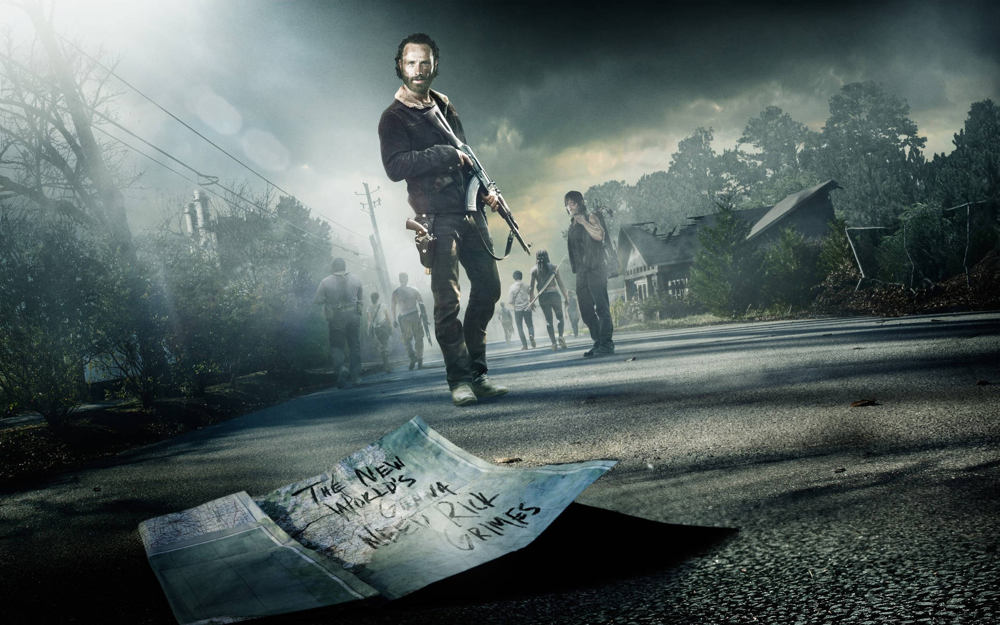
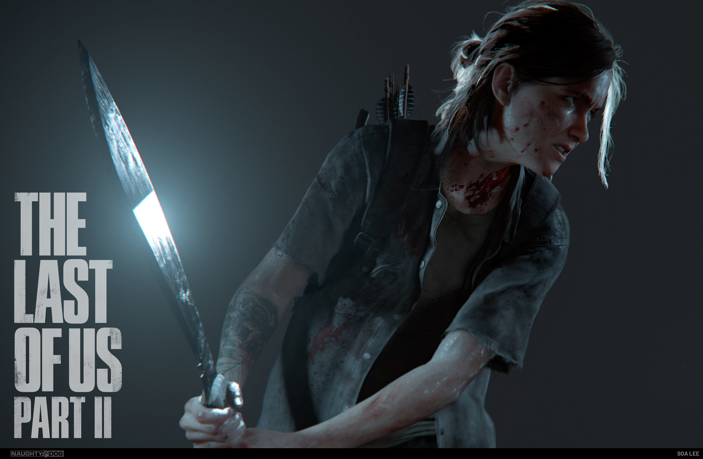
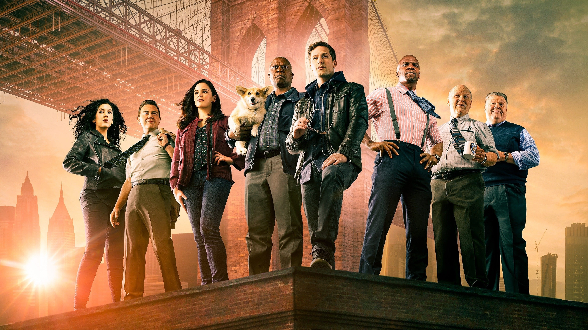
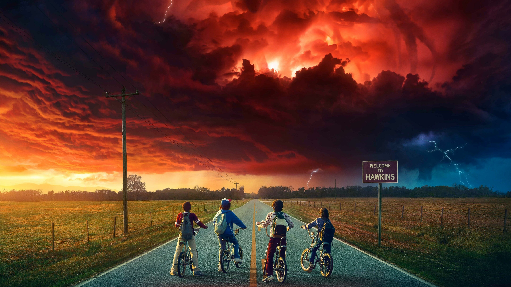
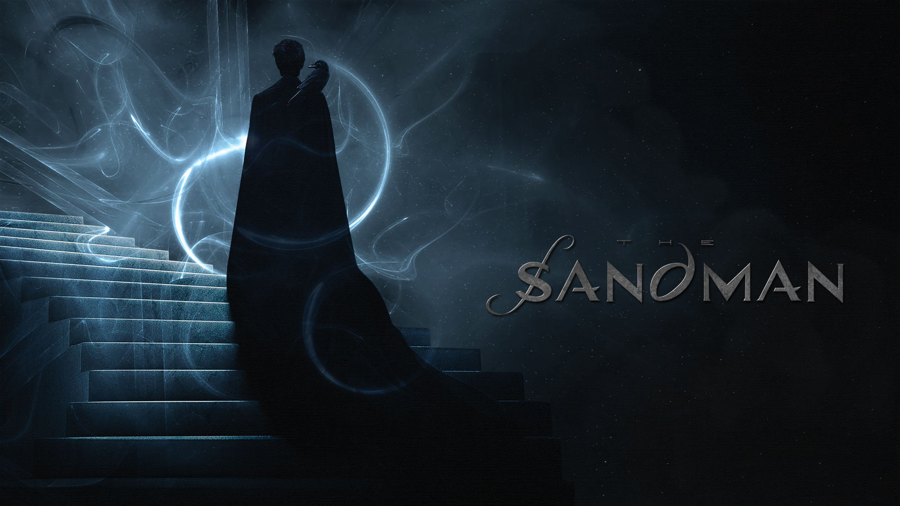
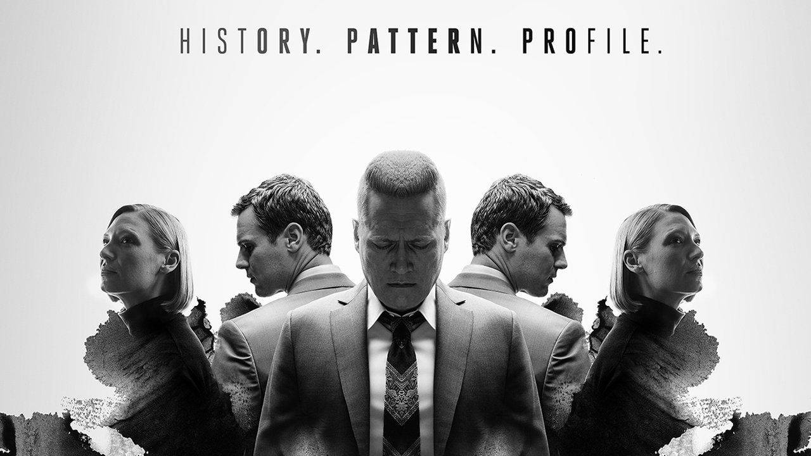
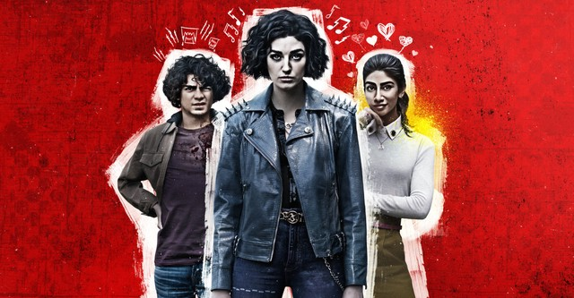
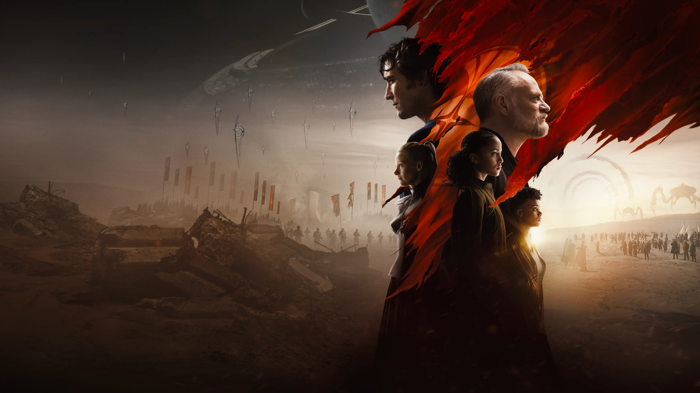
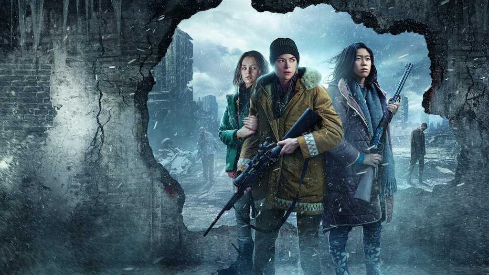

Z Nation
•5 Temporadas
Após um apocalipse zumbi, um grupo transporta o único humano imune pelo país até um laboratório, enfrentando hordas de mortos-vivos e grupos hostis.
O Dia do Chacal
•1 Temporada
Baseada no famoso livro de Frederick Forsyth, a série acompanha um assassino profissional conhecido como "O Chacal", contratado para matar o presidente francês Charles de Gaulle. A trama detalha sua preparação meticulosa e os esforços das autoridades para impedi-lo.
Z Nation
•5 Temporadas
Após um apocalipse zumbi, um grupo transporta o único humano imune pelo país até um laboratório, enfrentando hordas de mortos-vivos e grupos hostis.

The Walking Dead
•11 Temporadas
Após o apocalipse zumbi, um grupo de sobreviventes liderado por Rick Grimes luta para encontrar segurança e humanidade em um mundo dominado por mortos-vivos e ameaças humanas.

The Last of Us
•1 Temporada
Em um mundo devastado por uma infecção fúngica que transformou a maioria da humanidade em monstros, Ellie embarca em uma jornada de vingança e redenção, enfrentando perigos tanto humanos quanto infectados.

The Brooklin Nine-nine
•8 Temporadas
Série de comédia que acompanha o dia a dia de uma delegacia de polícia no Brooklyn, liderada pelo detetive Jake Peralta, cujo estilo irreverente e descompromissado se mistura a casos policiais e muita diversão.

Stranger Things
•5 Temporadas
Nos anos 80, um grupo de crianças enfrenta fenômenos sobrenaturais em sua pequena cidade, incluindo desaparecimentos misteriosos e a ameaça de uma dimensão paralela chamada "O Mundo Invertido".

Sandman
•1 Temporada
Baseada na famosa série de quadrinhos de Neil Gaiman, acompanha Morpheus, o Senhor dos Sonhos, que busca restaurar sua antiga ordem após anos de aprisionamento, enfrentando entidades míticas e desafios sobrenaturais.

Mindhunter
•2 Temporadas
Dois agentes do FBI nos anos 70 pioneiros em entrevistas com serial killers para entender a mente criminosa e aplicar esse conhecimento na solução de casos reais.

Imperfeitos
•1 Temporada
Série brasileira que mistura humor e drama para contar a história de pessoas que lutam para superar suas imperfeições e desafios pessoais em um mundo que cobra perfeição.

Fundação
•2 Temporadas
Baseada na obra de Isaac Asimov, narra uma tentativa de preservar o conhecimento humano diante da iminente queda do Império Galáctico, enquanto diferentes personagens tentam moldar o futuro da humanidade

Black Summer
•2 Temporadas
Série de zumbis que acompanha um grupo de sobreviventes tentando encontrar seus entes queridos e se manter vivos durante os primeiros e caóticos dias do apocalipse zumbi.